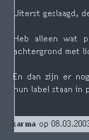

Wie lost de CSS bug op?
zaterdag 8 maart 2003 | Updates
In Internet Explorer gaan lange stukken tekst zweven, tot over de rand van de div-blokjes! Onder andere het commentaar formuliertje krijgt het zwaar te verduren wegens de ongelukkige positie helemaal onderaan de pagina’s. Hieronder een commentaartje van Karma uit mijn voorlaatste bericht.

Wouter Demuynck op 8 maart 2003
Voorlopig heb ik nog geen enkel idee waarom IE z'n (verborgen) kantlijn schuin tekent.
Misschien moet je eens wat spelen met het weglaten van padding/margin/... en het toevoegen van achtergrondkleuren om te zien wat er precies met de boxen gebeurt.